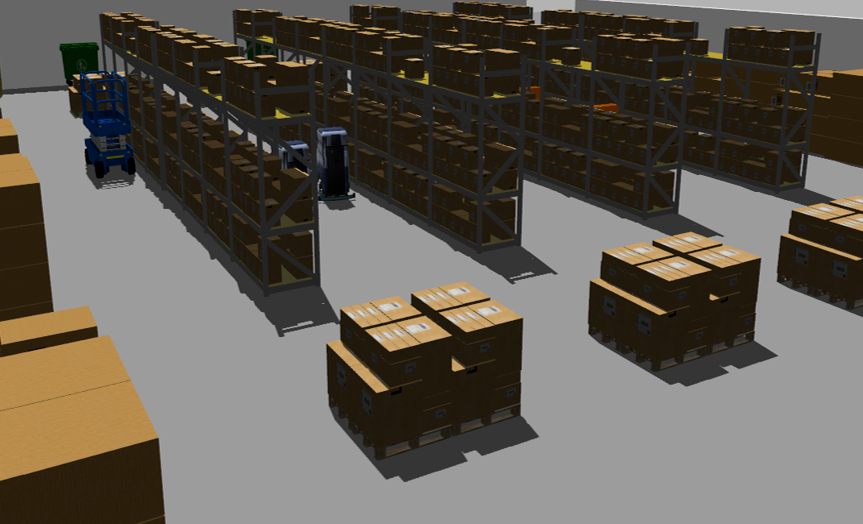
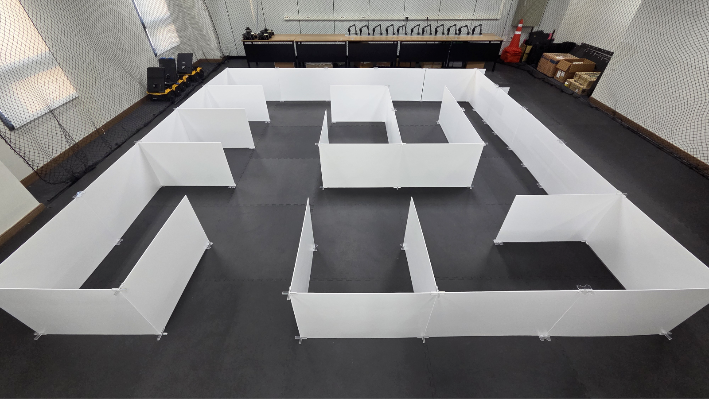
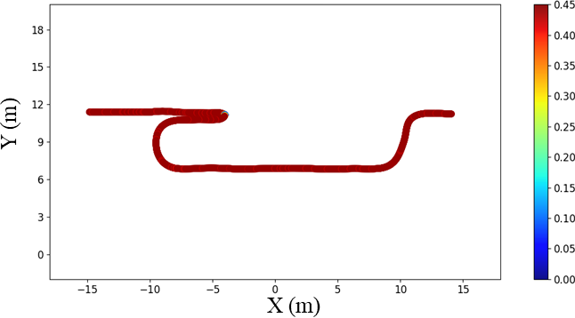
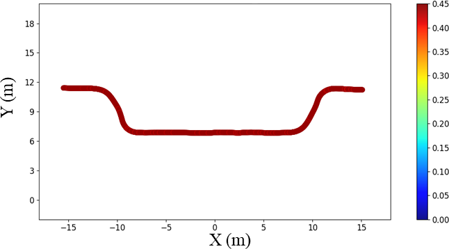
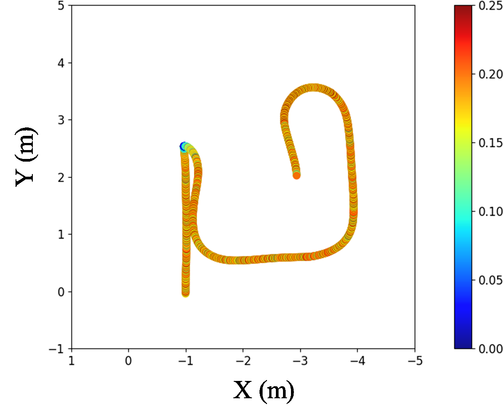
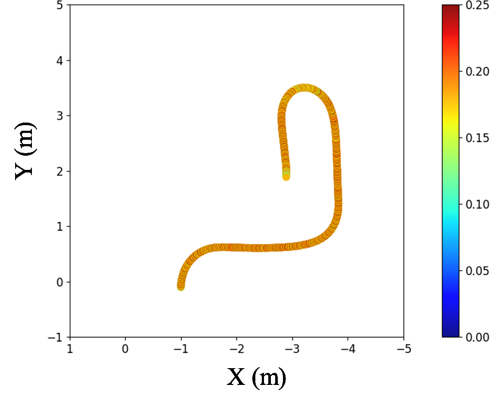

Choose where to go.
Specify ordered waypoints and required transit zones. Registered map labels connect language to navigation goals.
Natural-language robot navigation
Operational Policies for
Costmap-Based Navigation
Bring operating instructions into robot navigation. A local language model interprets the policy; Nav2 plans and follows the path.


01 / Capabilities
Destinations, corridor restrictions, and operating conditions become inspectable policies without replacing the Nav2 planner or controller.
Specify ordered waypoints and required transit zones. Registered map labels connect language to navigation goals.
Close a corridor or assign relative zone costs. Object rules add configured avoidance regions around detected people.
Apply time-limited restrictions and event-dependent permissions. The costmap can change while the destination remains active.
Inspect accepted updates, queue follow-up missions, and share constraints across namespaced robots with independent Nav2 instances.
02 / Navigation experiments
Four tasks examine keepout avoidance, zone costs, person-conditioned avoidance, and event-dependent passage in two testbeds.
Gazebo warehouse
A 25.9 × 41.6 m environment with shelves, barriers, and moving obstacles.
Mean travel time: Baseline → Policy
| Task / policy | Comparison | Travel time (s) | Travel distance (m) |
|---|---|---|---|
| Task 1Keepout | Baseline → Policy | 114.009 ± 0.721→ 86.125 ± 0.230 | 48.572 ± 0.108→ 37.245 ± 0.108 |
| Task 2Zone costs | Baseline → Policy | 311.369 ± 1.444→ 238.751 ± 3.643 | 126.152 ± 0.180→ 96.003 ± 0.177 |
| Task 3Person avoidance | Baseline → Policy | 142.049 ± 0.315→ 115.872 ± 0.790 | 61.185 ± 0.140→ 49.527 ± 0.340 |
| Task 4Event permission | Priority-Off → Priority-On | 86.170 ± 0.456→ 81.056 ± 0.328 | 37.241 ± 0.186→ 34.699 ± 0.121 |


Physical maze
TurtleBot3 Waffle with LiDAR, RGB-D sensing, and an onboard Jetson Orin Nano.
Mean travel time: Baseline → Policy
| Task / policy | Comparison | Travel time (s) | Travel distance (m) |
|---|---|---|---|
| Task 1Keepout | Baseline → Policy | 62.179 ± 1.322→ 40.390 ± 1.213 | 11.993 ± 0.210→ 8.138 ± 0.190 |
| Task 2Zone costs | Baseline → Policy | 55.849 ± 0.687→ 42.959 ± 1.079 | 10.850 ± 0.080→ 8.303 ± 0.156 |
| Task 3Person avoidance | Baseline → Policy | 42.109 ± 2.073→ 32.160 ± 1.153 | 8.020 ± 0.352→ 6.394 ± 0.216 |
| Task 4Event permission | Priority-Off → Priority-On | 46.280 ± 0.341→ 26.640 ± 0.230 | 9.308 ± 0.047→ 5.165 ± 0.018 |


Tasks 1–3 compare sensor-based Nav2 with the same stack supplied with operating policies. Task 4 compares passage permissions within the policy-enabled stack.
Native KeepoutFilter and custom KeepoutLayer both complete 5/5 runs and support restriction, release, and reapplication in pre-motion checks.
| Method | Completed | Distance (m) | Time (s) |
|---|---|---|---|
| Native KeepoutFilter | 5/5 | 37.339 ± 0.103 | 86.430 ± 0.236 |
| Custom KeepoutLayer | 5/5 | 37.300 ± 0.131 | 86.351 ± 0.329 |
03 / Language benchmark
Four local LLMs and a rule-based parser are evaluated on a researcher-authored English benchmark, from direct instructions to indirect expressions.
142 / 150 correct accepted policies
Qwen3.5-9B
44 / 150 correct accepted policies
Rule-based parser
| Method | Post-V policy accuracy | 95% CI | Generation latency |
|---|---|---|---|
| Rule-based parser | 29.3% (44/150) | 22.6–37.1% | 0.175 ms |
| Llama 3.1-8B | 71.3% (107/150) | 63.6–78.0% | 2.533 s |
| Qwen2.5-7B | 81.3% (122/150) | 74.3–86.8% | 1.694 s |
| Qwen3-8B | 94.0% (141/150) | 89.0–96.8% | 1.800 s |
| Qwen3.5-9B | 94.7% (142/150) | 89.8–97.3% | 3.011 s |
| Method | Correct accepted | Incorrect accepted | Interpreter rejection | Parsing rejection | Validator rejection |
|---|---|---|---|---|---|
| Rule-based parser | 44 | 101 | 5 | 0 | 0 |
| Llama 3.1-8B | 107 | 20 | 0 | 0 | 23 |
| Qwen2.5-7B | 122 | 10 | 3 | 0 | 15 |
| Qwen3-8B | 141 | 7 | 1 | 0 | 1 |
| Qwen3.5-9B | 142 | 3 | 4 | 0 | 1 |
| Method | Interpreter recognition | Pipeline containment |
|---|---|---|
| Rule-based parser | 24% (24/100) | 24% (24/100) |
| Llama 3.1-8B | 45% (45/100) | 96% (96/100) |
| Qwen2.5-7B | 77% (77/100) | 97% (97/100) |
| Qwen3-8B | 92% (92/100) | 99% (99/100) |
| Qwen3.5-9B | 100% (100/100) | 100% (100/100) |
04 / Interface demonstrations
Watch the interface apply map-specific instructions and shared operating rules in Gazebo.
“Please go to WP9 without passing through Zone F.” The command is submitted through the GUI, then Gazebo and RViz show its navigation effect.
Three namespaced Nav2 instances receive common zone rules while following independent waypoint missions.
Code & data
Policy Bridge, custom costmap layers, command benchmarks, and keepout run records.